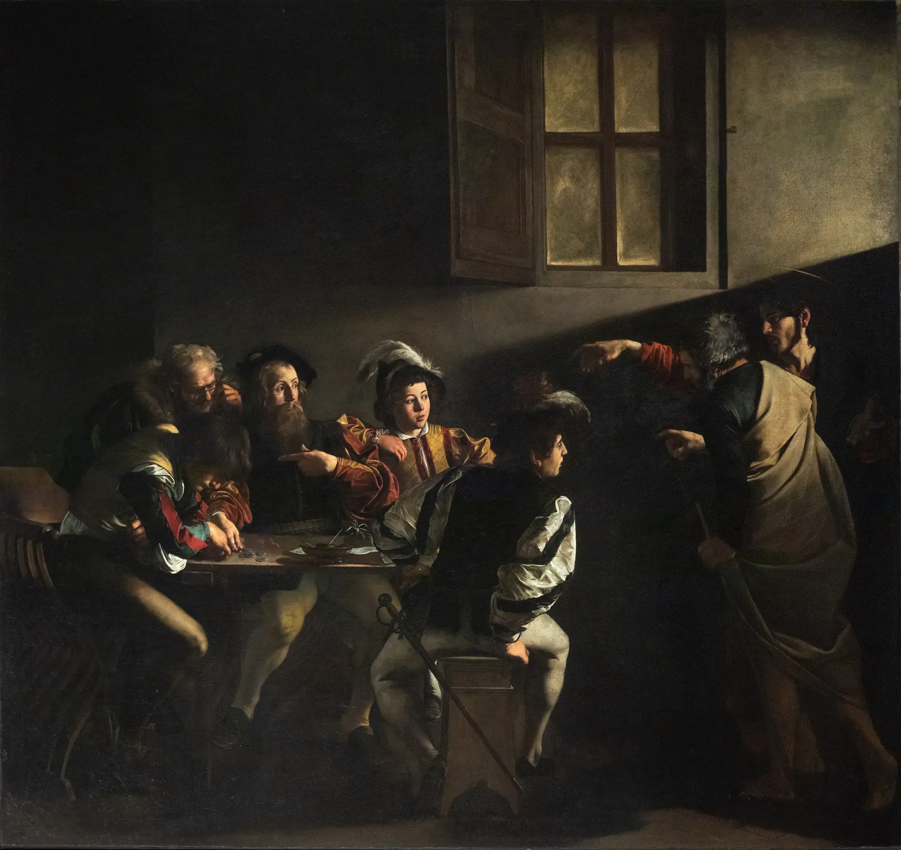
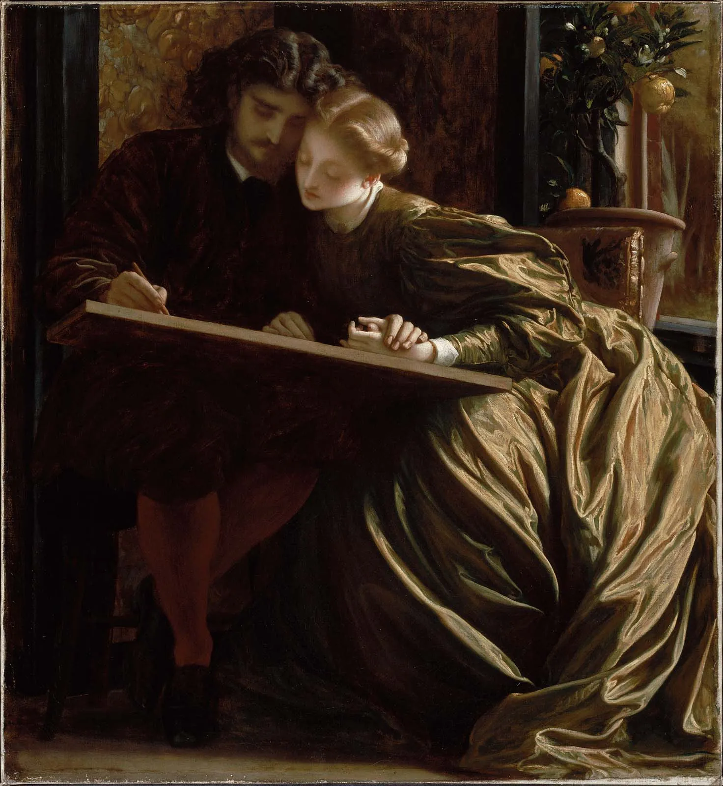

I.
Seen by everyone, felt by no one
Our generation has quietly begun to value art less. Not necessarily because we think art is unimportant, but because we increasingly experience it as something disposable. Visual culture has been reduced to tiny, rapidly consumed images, where a painting that was created to demand our attention can be viewed for a few seconds and immediately forgotten. We have more access to art than any generation before us, yet we seem to spend less time actually experiencing it. A painting becomes an image to scroll past rather than something to stand in front of. A cathedral becomes a photograph rather than a space to inhabit. And this matters because art is not simply decoration. It is one of the ways we preserve beauty, express what it means to be human, and give significance to experiences that cannot be reduced to utility. When we stop giving art our attention, we risk losing more than an appreciation for paintings or architecture. We risk becoming less capable of recognizing beauty and meaning in the world around us.
II.
We traded beauty for utility
We have optimized beauty out of our lives. In 1963, New York tore down the original Penn Station, a monumental granite-and-glass hall, and replaced it with the functional structure commuters know today. Nowadays one has the sack to ante up and create something that might be laughed at, criticized, or simply appreciated by only a few people. It is safer to make something useful, efficient, and broadly acceptable than to make something beautiful and risk it being misunderstood. Rarely are people bold enough to create something with enough character to divide opinion. So we get the same functional apartments, the same grey floors, the same white walls, the same buildings designed to offend no one. We have traded the possibility of beauty for the certainty of utility.

Nothing took beauty away from us. We were trained out of the patience it asks for.
America used to have character
America once had a recognizable visual identity: brick Main Streets, neon diners, Craftsman homes, and distinctive local architecture. Now our surroundings increasingly look interchangeable, while our clothes and interiors cycle through disposable trends. This is misplaced wonder: we have more visual stimulation than ever, yet less that asks us to stop and admire something lasting. We aren’t building a shared identity so much as renting one for a season. When a culture becomes afraid to make something that can be laughed at, criticized, or deeply loved, it eventually produces a world that is difficult to hate but almost impossible to love.
Medicine, law, business, engineering, these are noble pursuits and necessary to sustain life...
But poetry, beauty, romance, love, these are what we stay alive for.
— John Keating, Dead Poets Society (1989)

III.
Atmosphere is the rarest luxury
Think of the places you remember. Not the most expensive ones. A small hotel where the light, the linen, the smell of the hallway and the sound of the door all seemed to agree with each other. A restaurant where the plates, the music and the pace of the evening belonged to one idea. A garden that felt like it had its own weather.
Those places are complete worlds. Everything in them fits. And in a world being steadily standardized, with the same café, the same airport and the same grey-beige apartment on every continent, that kind of coherence is getting very hard to find.
IV.
Things that last gain meaning
A disposable culture slowly loses touch with itself. When nothing is made to last, nothing carries a history, and there is nothing to hand on.
Old things work the other way. A worn wooden table. A stair tread hollowed by two hundred years of feet. A jacket that has taken the shape of the person who wore it. These objects become more valuable, not less, because they carry the traces of care and use.